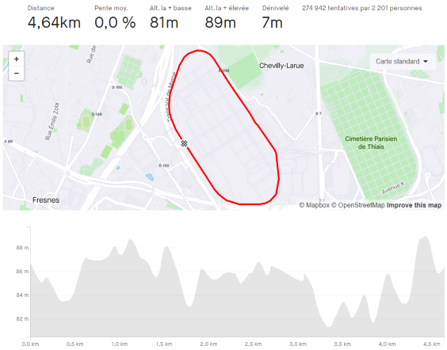
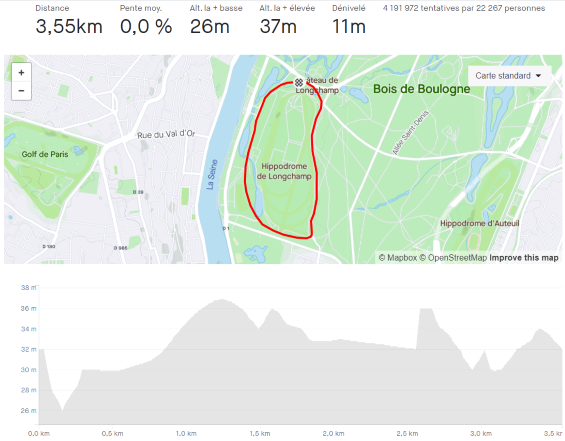
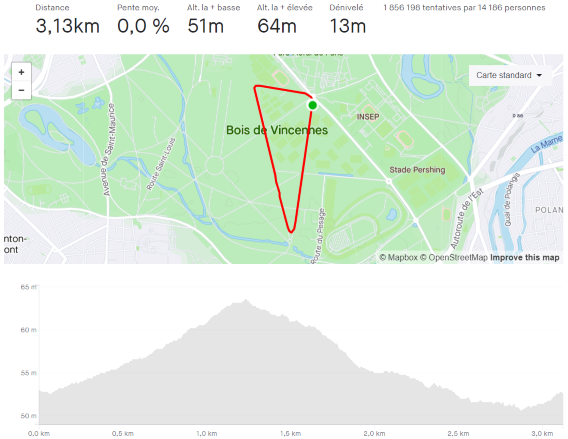

Le Peloton Francilien
Les principaux spots pour rouler en peloton autour de Paris ?
Le MIN de Rungis
La boucle de l'Hippodrome de Longchamp
Le Polygone de Vincennes
Photothèque
Liens utiles
Le MIN de Rungis
Infos Rungis
Longueur
4,64 km
Dénivelé +
7 m
Quand ?
Jeudi & Dimanche
Record Strava au tour
4:49

La boucle de l'Hippodrome de Longchamp
Infos Longchamp
Longueur
3,55 km
Dénivelé +
7 m
Quand ?
Dimanche
Record Strava au tour
4:07

Le Polygone de Vincennes
Infos Vincennes
Longueur
3,13 km
Dénivelé +
13 m
Quand ?
Mercredi & Dimanche
Record Strava au tour
3:42
